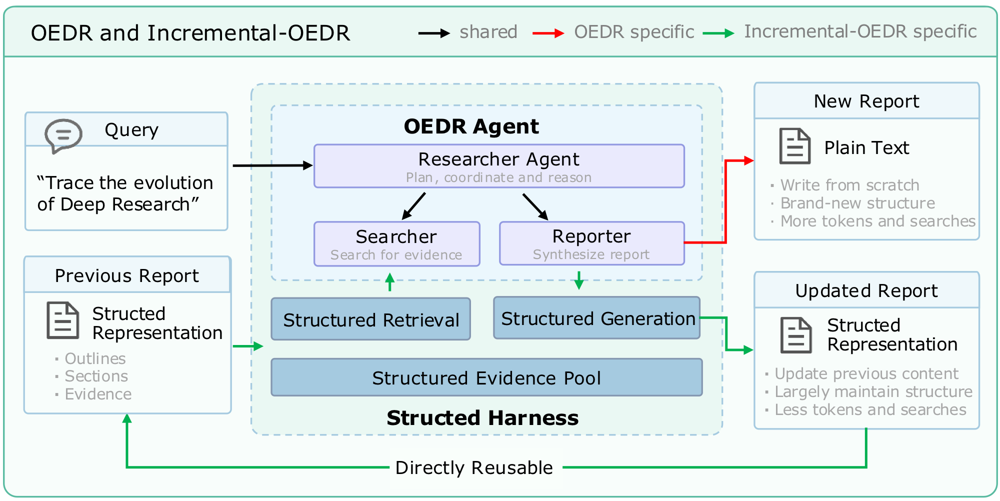
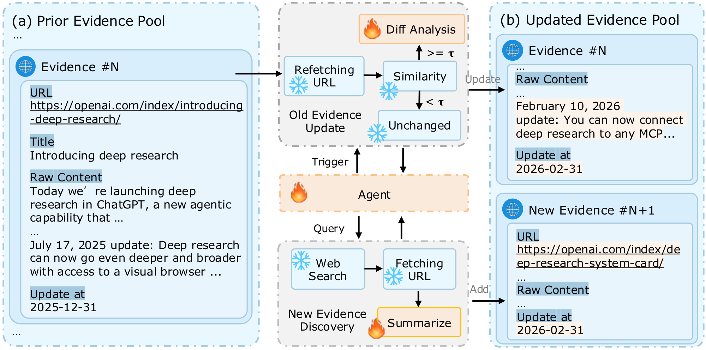

Existing Open-Ended Deep Research (OEDR) systems primarily generate reports from scratch, making them inefficient for scenarios where research reports need to be continuously maintained as new information emerges. We introduce Incremental Open-Ended Deep Research (Incremental-OEDR), a research setting that treats a report as an evolving research state and incrementally updates it by preserving valid knowledge, revising outdated or incomplete content, and incorporating newly available information.
To support this setting, we propose Structured Harness, which represents reports as structured collections of outlines, sections, and supporting evidence, and provides structured retrieval, a persistent structured evidence pool, and structured generation for selective report updating and evidence reuse. We further establish a temporal evaluation framework spanning ten years, with Single-Step Task and Long-Chain Task to evaluate incremental updates over both individual transitions and long-term update chains.
Extensive experiments on DeepResearch Bench and DeepConsult under both the Open-source Configuration (OC) and Proprietary Configuration (PC) show that Incremental-OEDR maintains competitive report quality while substantially improving report continuity and reducing research costs. It achieves up to 0.40 higher content-level ROUGE-L F1, 0.51 higher outline-level EM F1, 33% lower token consumption, and 61% fewer search calls than OEDR on DeepResearch Bench. We will release our code to facilitate future OEDR research in the community.


Side-by-side outline comparison of consecutive-year reports on DeepResearch Bench task #64 (Query: Regarding the attitude control problem for UAVs, most open-source flight controllers currently implement cascaded PID control algorithms. However, a single set of PID controller parameters typically performs well only under specific flight conditions. In practical applications, UAVs operate across diverse flight states. What methods can be employed to enhance the actual control performance of PID algorithms, and how should PID parameters be optimally selected?). Only Markdown headings are shown for readability. Switch between OEDR (independent regeneration) and IOEDR (incremental update) to observe how the two paradigms evolve a report over time.
2016 → 2017
Tip: use ← / → keys, or swipe horizontally on the panels.
@article{chen2026ioedr,
title = {Incremental Open-Ended Deep Research with Structured Harness},
author = {Chen, Meilin and Bao, Hongyuan},
journal = {arXiv preprint arXiv:2610.11566},
year = {2026}
}